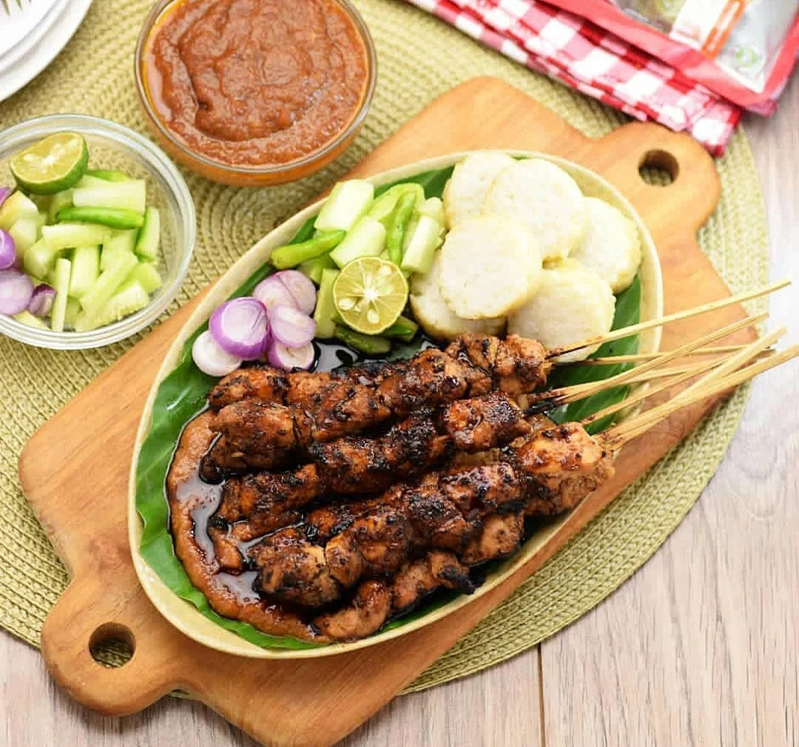

Sate Madura
Sate madura sangat enak dimakan. Dibalut dengan sambel kacang dan kecap.

Gulai Madura
Gulai adalah makanan khas Indonesia dengan rasa gurih dan berwarna kuning karena terbuat dari kunyit. Biasanya, gulai bisa dibuat dari berbagai bahan makanan, baik daging olahan seperti kambing dan sapi, serta sayuran seperti nangka dan daun singkong.

Soto Madura
Soto Madura adalah jenis soto yang berasal dari Madura, Jawa Timur, Indonesia. Soto ini biasanya berbahan dasar daging sapi, telur rebus, kentang goreng, dan tauge.